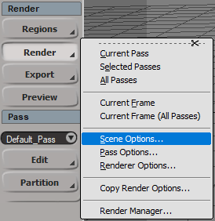

Last update: 17.09.2021
Description: This addon is a port for the Toonkit for Cycles addon for Blender. The addon use Sycles (Cycles render integration into Softimage) as a render engine and OSL as shading system, but all shaders may be used with other render engine which supports osl-shaders.
Download: version 1.0.1
Documentation:
- Official documentaion for Blender addon
- Short introduction in english
- Short introduction in russian
How to use: Install as usual addon for Softimage. Next go to Render - Scene Options
and select Cycles Renderer as Scene Renderer.
Next in render properties in the tab Performance set Shading System as OSL.
Warning: There is noncrtitical bug. Addon contains four nodes SToon Easy Toon, SToon Scene Shading, SToon Scene Light and SToon Scene Shadow which are used to collect data about light sources in the scene. This data collection occurs every time before the frame is rendered if the scene renderer is Cycles Renderer (that is why we select it in the previous section. For other scene renderers this event is skipped). Sometimes, if the addon should change the data inside these nodes, the Render Tree window is blocked and can not be changed after render finish. Simply close the Render Tree window and open it again.
If the Sycles version is greater than 1.10, then disable mesh caching in the render properties. This will allows to properly update requires data for shading.
Render examples: